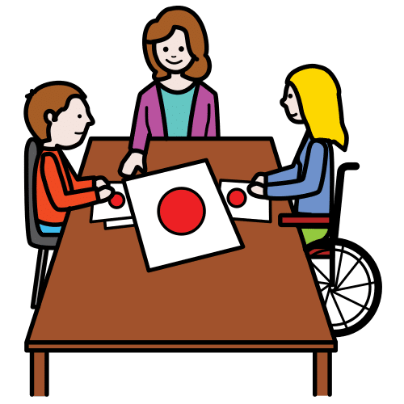
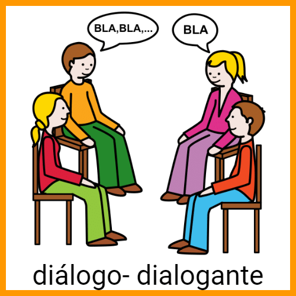
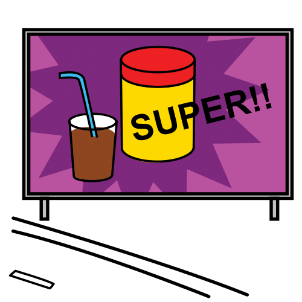
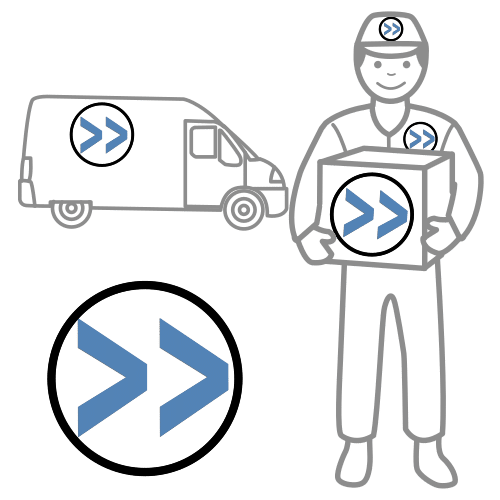

Diccionario
Aplicación
Definición:
Programa de ordenador o de móvil para usarse para algo.
Ejemplo:
Descargué una aplicación de música en mi nuevo móvil.
Consensuar
Definición:
Adoptar una decisión de común acuerdo entre dos o más partes.
Ejemplo:
Hemos llegado a un consenso.
Cooperar

Definición:Actividad realizada por dos o más personas con un mismo objetivo.
Ejemplo:
Hemos realizado en clase un trabajo en grupo de manera cooperativa.
Dialogar
Definición:
Hablar con más personas sobre un tema o una cuestión.
Ejemplo:
Los miembros del grupo deben dialogar para llegar a un acuerdo.
Eslogan
Definición:
Frase publicitaria breve, ingeniosa y fácil de recordar.
Ejemplo:
Los desodorantes suelen tener eslóganes muy ingeniosos.
Logo
Definición:
Símbolo formado por imágenes que sirve para identificar una empresa.
Ejemplo:
Se ha encargado a un diseñador el logo de nuestra empresa.

 Para continuar en la creación de tu empresa deberás elegir sus tres productos estrella, es decir, los tres productos que consideras serán los principales o líderes en el mercado. Cada miembro del equipo hará una lista de 5 productos estrella ordenados de más a menos importantes, luego se leen todas y finalmente se eligen los tres productos más votados.
Para continuar en la creación de tu empresa deberás elegir sus tres productos estrella, es decir, los tres productos que consideras serán los principales o líderes en el mercado. Cada miembro del equipo hará una lista de 5 productos estrella ordenados de más a menos importantes, luego se leen todas y finalmente se eligen los tres productos más votados.